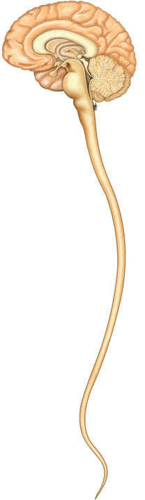

A. 신경계의 구성

• 신경계는 중추신경계(뇌·척수)와 말초신경계(뇌신경·척수신경)로 구성된다.
• 중추신경계: 정보를 통합·분석하여 명령을 내리는 최고 조절 중추
• 말초신경계: 구심성 신경세포(자극→중추) + 원심성 신경세포(중추→반응기)
• 중추신경계: 정보를 통합·분석하여 명령을 내리는 최고 조절 중추
• 말초신경계: 구심성 신경세포(자극→중추) + 원심성 신경세포(중추→반응기)
신경계
→
중추신경계
:
뇌(대뇌·소뇌·사이뇌·뇌줄기) + 척수
말초신경계
→
원심성 → 체성신경계 (골격근)
원심성 → 자율신경계 (내장·혈관)
B. 중추신경계: 뇌의 구조와 기능
① 대뇌
② 사이뇌
③ 소뇌
④ 중간뇌
⑤ 다리뇌
⑥ 숨골
| 구분 | 구조적 특징 | 주요 기능 |
|---|---|---|
| ① 대뇌 | 좌우 2개의 반구; 겉질(회색질)·속질(백색질) | 감각 정보 분석, 운동 조절, 언어·기억·사고 등 고등정신 활동; 몸 오른쪽 ↔ 왼반구 |
| ② 사이뇌 | 시상, 시상하부, 뇌하수체 | 감각신호를 대뇌로 전달; 항상성 유지(항상성) |
| ③ 소뇌 | 대뇌 뒤쪽 아래에 위치 | 수의운동 보조, 자세와 평형 유지 |
| ④⑤⑥ 뇌줄기 | 중간뇌(④) + 다리뇌(⑤) + 숨골(⑥) | 뇌와 척수 연결; 호흡·심장 운동 조절 → 생명 유지 중추 |